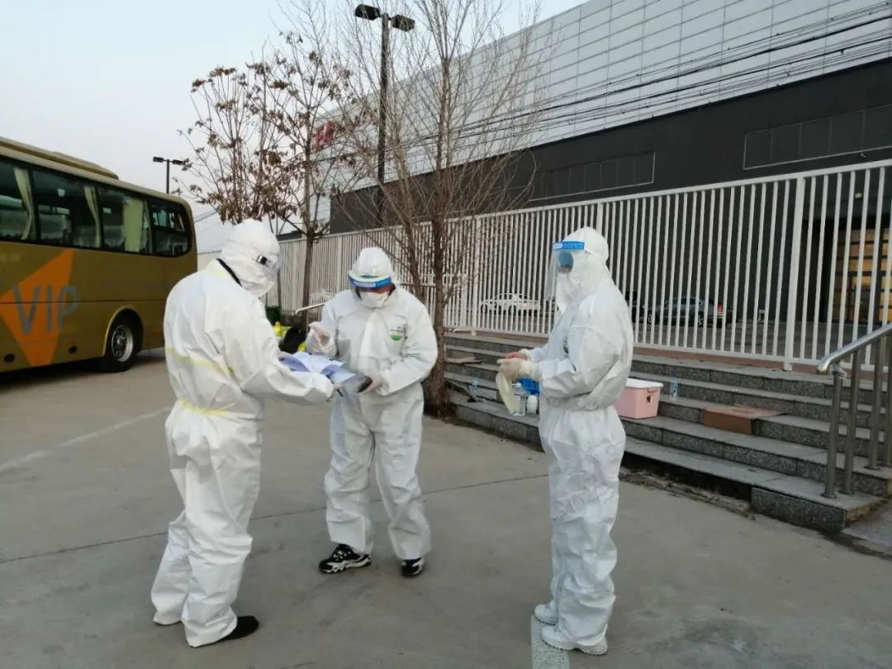
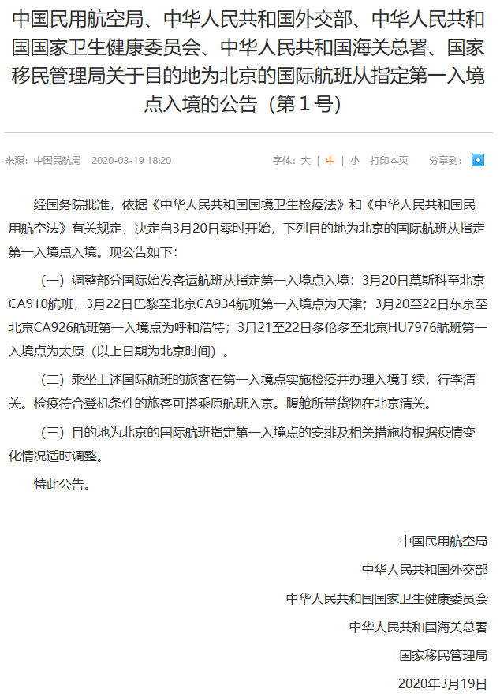
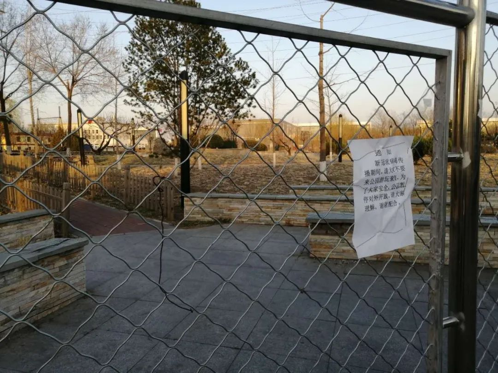

直击首都机场抗疫最前线：航班大多正常，筛查非常严格
原文链接 备份链接 随着国内疫情逐渐得到控制，防止境外疫情输入成为现阶段防疫重点。从过海关到进入北京地区，如何筛查入境旅客？ 文 | 《财经》记者 姚佳莹 陈亮 编辑 | 朱弢 施智梁 相较于以往满列航班信息的显示屏，3月17日下午两点 …

首都机场对所有入境人员采取集中隔离措施，表明北京防控压力陡增，为此迅速采取各种有效防控手段，符合各方面的共同诉求

沈阳驻京办事处工作人员在准备对接旅客
文 |《财经》记者 陈亮 姚佳莹
编辑 | 施智梁 朱弢
为了舒缓北京首都机场防控外来疫情输入的压力，此前盛传的首都机场国际航班分流周边城市的方案已出台，将从3月20日正式付诸实施。
3月19日晚间，民航局、外交部、国家卫生健康委、海关总署、移民局联合发布《关于目的地为北京的国际客运航班有关事宜的公告》（下简称公告），决定调整目的地为北京的部分国际航班从指定第一入境点入境。
公告称，将调整部分国际始发客运航班从指定第一入境点入境：北京时间3月20日莫斯科至北京CA910航班、3月22日巴黎至北京CA934航班第一入境点为天津；3月20—22日东京至北京CA926航班第一入境点为呼和浩特；3月21—22日多伦多至北京HU7976航班第一入境点为太原。

乘坐上述国际航班的旅客在第一入境点实施检疫并办理入境手续，行李清关。检疫符合登机条件的旅客可搭乘原航班入京。腹舱所带货物在北京清关。
根据公告，目的地为北京的国际航班指定第一入境点的安排及相关措施，将根据疫情变化情况适时调整。
民航局将根据疫情防控的整体要求，加强与各部门的协同配合，严密制定工作方案，指导民航各运行单位加强风险管控，进一步严格做好机上防控消毒，确保航班运行安全有序。
民航局将加强与地方政府的对接，和相关部门共同推进入境疫情防控“数据共享、人员处置、防控合作”机制落地，织密织牢联防联控网络。
值得注意的是，上述公告是第1号公告。后续接收地机场保障跟上，航司人员配置跟上后，或出现更多分流公告。

新国展外围的公园已封锁
罗兰贝格管理咨询公司全球合伙人于占福告诉《财经》记者，此次多部门联合发布的新政策，在整个中国民航界都属首次。其联合部门之多，涉及到的具体操作流程和管理制度的复杂性之巨，在中国民航历史上都堪称突破。
对于目前已经造成全球20多万确诊病例，所有有人类常驻大洲无一幸免的“全球大流行”疫情的冲击，于占福认为，已经没有同等量级的先例经验可循，且疫情的全球局势变化速度相当快，每天都有非常复杂的新情况出现，面对这样一个无先前经验可供参考的挑战，多部门联合协作，打破常规、灵活创新、勇于突破是非常必要的举措。
首都机场分流也预期之内，北京面临输入性病例增多的难题，必须采取有效应对措施。
3月19日北京共新增境外输入确诊病例6例，疑似病例6例。截至3月19日24时，累计报告境外输入确诊病例70例，治愈出院病例6例。
自2月29日以来，由机场海关检疫转医疗机构筛查的人员累计2417人，日均127人，近一周来日均已达288人，3月18日高达479人。
首都机场口岸日均入境人员约6000—8000人。飞友科技统计数据显示，仅3月18日就有24班入境航班。北京规定所有境外进京人员均应转送至集中观察点进行14天的隔离观察，与上海仅针对24个重点国家采取集中隔离措施相比，北京防控压力更大。
北京市分配给沈阳入境人员的酒店有两家。除了引导旅客填报个人健康信息，从接送到入住酒店，每一环节经手人都需签字。“谁负责接送，谁签字。到宾馆，谁负责接待也要签字，而整套流程我们都需要全程跟随，忙不过来啊。”一名负责对接沈阳旅客的工作人员向《财经》记者表示。
“我是从大年三十一直干到现在，确定沈阳市无新增确诊病例后就到北京负责对接沈阳入境旅客。现在每天很多人入境，我们人手根本不够，这里的每一个人都是24小时连轴转，一天后再换另一拨人。”以上工作人员说。
根据中外航空公司报送的航班计划，3月16日-22日，中国内地和52个国家的102个境外航点保持定期航班飞行，当周计划执行2072班往返航班，其中客运1165班。《财经》记者统计显示，这些航班中有202班飞往首都机场。
随着疫情全球蔓延，中国民航局3月19日通告，以民航局3月12日官网发布的“国际航班信息发布（第5期）”为基准，每家航空公司在每条航线上的航班量只减不增。


▲点击图片查看更多疫情报道
责编 | 蒋丽 lijiang@caijing.com.cn
本文为《财经》杂志原创文章，未经授权不得转载或建立镜像。如需转载，请在文末留言申请并获取授权。
原文链接 备份链接 随着国内疫情逐渐得到控制，防止境外疫情输入成为现阶段防疫重点。从过海关到进入北京地区，如何筛查入境旅客？ 文 | 《财经》记者 姚佳莹 陈亮 编辑 | 朱弢 施智梁 相较于以往满列航班信息的显示屏，3月17日下午两点 …
原文链接 备份链接 海外疫情紧张，在外中国人如何回国？韩国来华航班为何爆满？中国是否会对疫情高风险国家人员采取限制措施？ 3月1日，国务院联防联控机制召开新闻发布会，就如何有效防控海外疫情输入的相关问题，给出权威回答。 发布会现场 全国治 …
原文链接 备份链接 图片来源：视觉中国 本文来源：平安北京 “ 3月15日15时许，朝阳公安分局接某小区卫生防疫工作人员报警称：一女子拒不配合社区防疫工作。接报警后，呼家楼派出所民警立即赶赴现场开展工作。 ” 据@平安北京通报，当前，境外 …
原文链接 备份链接 这次疫情，也让我对祖国有了更深刻的认同，突发事件面前，我们国家的组织调配能力是一流的。 记者 | 沈 林 受访人 | 胡晓琳 最近很多在海外的同胞们都在纠结一个问题：非常时期，到底应不应该回国？或许我的经验可以给他们 …
原文链接 备份链接 根据伊朗卫生部消息，截至3月18日中午，伊朗累计确诊新冠肺炎病例17361例，其中5710例康复，1135例死亡。无论确诊还是死亡人数，都位居世界第三，仅次于中国和意大利。 伊朗也是目前已知最多政府官员确诊的国家，包括 …